1092G10 single engine belt r r
- Path
- Procedures > 10 ENGINE > 1092 VARIOUS ENGINE COMPONENT CONTROLS > 1092G single drive belt for various engine components > 1092G10 single engine belt r r
- Kind
- repair procedure (removal / refitting; the operation number is the code)
- Applies to
- engines: 1.6 TS , 1.8 TS, 2.0 JTS, 2.5 V6, 3.2 V6, 1.9 JTD 8v , 1.9 JTD 16v, 2.0 JTS, 2.4 JTD 10v, 2.4 JTD 20v; all production periods
- Interactive page
- https://sloeber94.github.io/elrnDB-a156/en/#/3237644
Applies to: engines: 2.5 V6, 3.2 V6; all production periods
 Removing
Removing
 Refitting
Refitting4450B10 Front WHEEL (one) - R.R.
7055B64 Engine compartment DUST shield in front wheel arch (one), left or right - R.R.
1. Loosen the engine components single drive belt tension adjusting the belt tensioner.
2. Lock the tensioner (2a) with the belt slack inserting a suitable peg (2b).
3. Remove the engine components single drive belt.
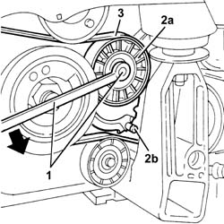
Applies to: engines: 2.5 V6, 3.2 V6; all production periods
Refitting
RemovingFit the single drive belt.
Use a spanner on the moving tensioner to extract the peg.
7055B64 Engine compartment DUST shield in front wheel arch (one), left or right - R.R.
Applies to: engines: 1.6 TS , 1.8 TS; all production periods
Removing
RefittingPlace the car on the lifting bridge.
7055B54 under-engine guard - r r
- 4450B80 cap of one wheel - r+r
4450B10 Front WHEEL (one) - R.R.
7055B64 Engine compartment DUST shield in front wheel arch (one), left or right - R.R.
1. Release belt tension by acting on mobile tensioner screw anti-clockwise.
2. Disjoin engine unit single belt.
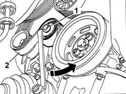
Applies to: engines: 1.6 TS , 1.8 TS; all production periods
Refitting
RemovingBy a wrench act on mobile tensioner anti-clockwise and insert engine unit single belt.
7055B64 Engine compartment DUST shield in front wheel arch (one), left or right - R.R.
4450B10 Front WHEEL (one) - R.R.
- 4450B80 cap of one wheel - r+r
Applies to: engines: 2.0 JTS, 2.0 JTS; all production periods
Removing
RefittingPosition the vehicle on the ramp.
Proceed with removal 4450B04 right front wheel r r .
Proceed with removal 7055B54 under-engine guard - r r .
Proceed with removal 1016A40 ignition coil cover on cylinder head- r+r .
1. Remove the buttons (1a), undo the attachments (1b) and remove the front right wheelarch mudguard (1c).
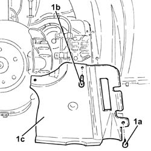
Applies to: engines: 2.0 JTS, 2.0 JTS; all production periods
1. Undo the bolts (1a), nut (1b) and remove the engine components single drive belt protection (1c).
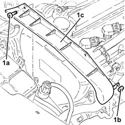
Applies to: engines: 2.0 JTS, 2.0 JTS; all production periods
1. Undo the nut (1a) and remove the brackets (1b) securing the power steering pipes.
2. Use a spanner on the moving tensioner (2a) and remove the single drive belt (2b).
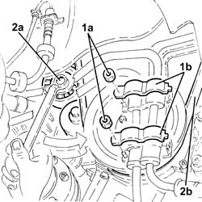
Applies to: engines: 2.0 JTS, 2.0 JTS; all production periods
Refitting
RemovingUse a spanner in an anti-clockwise direction on the moving tensioner and fit the engine components single drive belt.
Refit the engine components single drive belt protection in its seating and secure with its nut and bolts.
Fit the brackets securing the power steering pipes in their seatings and secure them with their nuts.
Place the right front wheel housing dust protection back in its housing and secure it using the fastenings and buttons.
Proceed with refitting 1016A40 ignition coil cover on cylinder head- r+r .
Proceed with refitting 7055B54 under-engine guard - r r .
Proceed with refitting 4450B04 right front wheel r r .
Connect the negative (-) battery terminal.
Remove the car from the ramps.
Applies to: engines: 1.9 JTD 8v ; all production periods
Removing
RefittingPosition the vehicle on the lift.
4450B10 Front WHEEL (one) - R.R.
7055B64 Engine compartment DUST shield in front wheel arch (one), left or right - R.R.
1. Adjust the moving tensioner to loosen the engine components single drive belt tension.
2. Remove the engine components single drive belt.
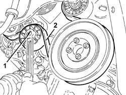
Applies to: engines: 1.9 JTD 8v ; all production periods
Refitting
RemovingAdjust the moving tensioner and fit the engine components single drive belt.
7055B64 Engine compartment DUST shield in front wheel arch (one), left or right - R.R.
4450B10 Front WHEEL (one) - R.R.
Remove the vehicle from the ramp.
Applies to: engines: 2.4 JTD 10v; all production periods
Removing
RefittingPosition the vehicle on the lift.
Raise the car.
4450B10 Front WHEEL (one) - R.R.
7055B64 Engine compartment DUST shield in front wheel arch (one), left or right - R.R.
1. Adjust the engine components single drive belt automatic tensioner (1a) using the tool (1b), then insert the tool (1c).
 | Name | Country |
|---|---|---|
1b | Key | 1.860.966.000 |
| Name | Country |
|---|---|---|
1c | Clip | 1.870.645.000 |
2. Remove the engine components single drive belt tensioner plug.
3. Loosen the engine components single drive belt tensioner bolt.
4. Remove the engine components single drive belt.
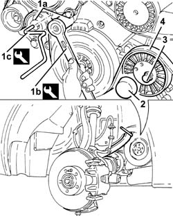
Applies to: engines: 2.4 JTD 10v; all production periods
Refitting
RemovingFit the single drive belt.
1. Rotate the single drive belt cam tensioner (1a) using the tool (1b) until the tool (1c) comes out, then tighten the bolt (1d) to the recommended torque.
| Name | Country |
|---|---|---|
1b | Key | 1.860.968.000 |
| Name | Country |
|---|---|---|
1c | Clip | 1.870.645.000 |
 | Fastening | Component | Ø | Value (daNm) |
|---|---|---|---|---|
1d | Bolt | CRANKSHAFT PULLEY | M8 | 4.2 - 5.2 |
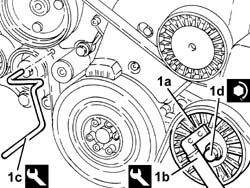
Applies to: engines: 2.4 JTD 10v; all production periods
Fit the plug on the engine components single drive belt cam belt tensioner.
7055B64 Engine compartment DUST shield in front wheel arch (one), left or right - R.R.
4450B10 Front WHEEL (one) - R.R.
Lower the vehicle.
Remove the vehicle from the ramp.
Applies to: engines: 1.9 JTD 16v; all production periods
Removing
RefittingPosition the vehicle on the ramp.
Proceed with removal 4450B04 right front wheel r r .
Proceed with removal 7055B54 under-engine guard - r r .
Proceed with removal - 7055B91 Right front WHEEL ARCH LINER - R.R. .
1. Use a spanner on the moving tensioner (1a) and remove the single drive belt (1b).
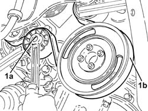
Applies to: engines: 1.9 JTD 16v; all production periods
Refitting
RemovingAdjust the moving tensioner and fit the engine components single drive belt using a spanner.
Proceed with refitting - 7055B91 Right front WHEEL ARCH LINER - R.R. .
Proceed with refitting 7055B54 under-engine guard - r r .
Proceed with refitting 4450B04 right front wheel r r .
Remove the car from the ramps.
Applies to: engines: 2.4 JTD 20v; all production periods
Removing
RefittingPosition the vehicle on the ramp.
Proceed with removal 4450B04 right front wheel r r .
Proceed with removal 7055B54 under-engine guard - r r .
Proceed with removal - 7055B91 Right front WHEEL ARCH LINER - R.R. .
Proceed with removal - 7055B66 Engine compartment DUST SHIELD protection in right front wheel arch - R.R. .
1. Use the tool (1a) on the moving tensioner (1b), then insert the tool (1c) in the opening in the moving tensioner.
| Name | Country |
|---|---|---|
1a | Key | 1.860.966.000 |
| Name | Country |
|---|---|---|
1c | Clip | 1.870.645.000 |
2. Remove the protective plug for the single drive belt cam tensioner.
3. Loosen the engine component single drive belt tensioner fixing bolts.
4. Remove the engine components single drive belt.
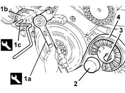
Applies to: engines: 2.4 JTD 20v; all production periods
Refitting
RemovingFit the single drive belt.
1. Rotate the single drive belt cam tensioner (1a) using the tool (1b) until the tool (1c) comes out easily, then tighten cam tensioner fixing bolt (1d) to the recommended torque.
| Name | Country |
|---|---|---|
1b | Key | 1.860.968.000 |
| Name | Country |
|---|---|---|
1c | Clip | 1.870.645.000 |
| Fastening | Component | Ø | Value (daNm) |
|---|---|---|---|---|
1d | Bolt | VARIOUS S D BELT CAM TENSIONER | M10 | 4.5 ÷ 5.5 |
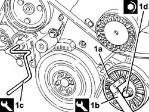
Applies to: engines: 2.4 JTD 20v; all production periods
Proceed with refitting - 7055B66 Engine compartment DUST SHIELD protection in right front wheel arch - R.R. .
Proceed with refitting - 7055B91 Right front WHEEL ARCH LINER - R.R. .
Proceed with refitting 7055B54 under-engine guard - r r .
Proceed with refitting 4450B04 right front wheel r r .
Remove the car from the ramps.
Topics linked from this page (5)
- 1016A40 ignition coil cover on cylinder head- r+r
- 4450B04 right front wheel r r
- 4450B10 Front WHEEL (one) - R.R.
- 7055B54 under-engine guard - r r
- 7055B64 Engine compartment DUST shield in front wheel arch (one), left or right - R.R.
Topics that link to this page (87)
- D30 ENGINE OVERHEATING / WITH THE FAN WORKING
- H11 STEERING HARD / (IN ONE DIRECTION ONLY)
- L10 CLIMATE CONTROL NOT COOLING
- S10 ENGINE WHILSTLING / SERVICES BELT NOISY'
- S12 ENGINE BUZZING'
- 0010M20 120,000km service coupon, emission control versions
- 1008A46 cam shaft left rigid mount - r r
- 1008C14 engine link bracket - r r
- 1008C18 link mount on engine - r r
- 1008C19 engine link mount - r r
- 1016B10 single cylinder head extension - change gasket
- 1016C10 cylinder head - r + r and replace gasket
- 1016D21 lh cylinder head - r r and replace gasket for versions with air conditioner
- 1016D25 rh cylinder head - r r and replace gasket for versions with air conditioner
- 1020A20 crank case oil sump - r + r clean seals for sealant application
- 1020D12 front crank shaft oil seal cover - r + r and replace seals
- 1020D14 front crank shaft oil seal cover - r + r and replace seals for versions with oil pump on crank shaft, timing side
- 1020D16 front crankshaft oil seal cover - r+r and replace gaskets for versions with airconditioner
- 1020D18 front crank shaft cover oil seal - replace
- 1020D38 flywheel side oil seal - replace
- 1020E10 oil seal cover (one) - l or r - on counter-rotating shafts - r + r and replace seals
- 1020E20 front oil seal of one counter-rotating shaft, l or r - r + r
- 1024B10 engine flywheel - r + r for versions with manual gearbox
- 1028H10 connecting rod and piston set - r r
- 1028H20 piston with connecting rod - r r
- 1028H21 piston with connecting rod - r r
- 1032B10 toothed timing belt - r + r for timing adjustment or replacement
- 1032B14 toothed timing belt - r + r for timing adjustment or replacement versions with air conditioner
- 1032B46 toothed drive pulley - r + r
- 1032B47 toothed drive pulley - r r for versions with air conditioner
- 1032B52 toothed driven pulley (one) - r + r
- 1032B55 lh head toothed drive pulley - r r for versions with air conditioner
- 1032B59 rh head toothed drive pulley - r r for versions with air conditioner
- 1032B60 bolt pulley - r r
- 1032B62 a/c duct pulley - r r
- 1032C18 mobile timing system tensioner - r + r for 24 valve engines
- 1032C19 mobile timing belt tensioner - r r for versions with air conditioner
- 1032C31 fixed timing tensioner - r r
- 1032C32 fixed timing system tensioner (one) r + r
- 1032D12 timing system protective cover(s) - r + r
- 1036B10 overhead camshaft - r r on vehicle
- 1036C10 camshaft in cylinder head - r r on vehicle
- 1036E11 camshafts in left hand cylinder head - r r on vehicle for versions with air conditioner
- 1036E15 camshafts in rh cylinder head - r r on vehicle for versions with air conditioner
- 1036E19 camshafts in lh and rh cylinder head - r r on vehicle for versions with air conditioner
- 1036E54 front oil seals of l/h overhead camshaft - replace
- 1036E58 front oil seal of r/h overhead camshafts - replace
- 1036H57 hydraulic tappets all r r
- 1036C10 camshafts in cylinder head extension - r r - includes cylinder head extension replacement if necessary
- 1036L10 camshafts in cylinder head extension - r r - includes cylinder head extension replacement if necessary
- 1036L20 camshaft idler gears - replace
- 1036L30 front oil seal of intake camshaft in cylinder head extension replace
- 1056B51 cam angle sensor r + r
- 1060E10 pressure pump - r r
- 1060E30 pressure pump pulley - r r
- 1060E40 supplementary pressure pump - r r
- 1060G22 cam angle sensor - r r
- 1072B10 inlet manifold - r + r and replace seal
- 1072B50 sleeves connecting air capacity box to inlet manifold is - r+r
- 1084A42 engine oil pressure warning light switch - r + r
- 1084B16 engine oil pump - r+r vehicles with a/c
- 1084B23 oil pump control return - r r
- 1084B26 emgine oil intake duct - r r
- 1084C10 engine oil heat exchanger - r + r
- 1088C10 water pump - r + r
- 1088C12 water pump - r+r for versions with air conditioner
- 1092A10 Crankshaft services PULLEY - R.R.
- 1092A12 crankshaft pulley - r+r for versions with air conditioner
- 1092E10 counter-rotating shaft drive toothed belt - r + r
- 1092E16 counter-rotating shaft drive toothed belt tensioner - r + r
- 1092E22 counter-rotating shaft drive toothed belt drive pulley - r + r
- 1092E26 counter rotating shaft pulley - r + r
- 1092G14 engine component single belt mobile tensioner - r + r
- 1092G20 engine component single belt fixed tensioner - one - r + r
- 1092G40 cam belt tensioner - r r
- 2110A10 manual gearbox and differential - r + r
- 2710A32 intermediate drive shaft bearing support - r + r with intermediate drive shaft removed
- 2710A34 intermediate drive shaft bearing support - r + r with intermediate drive shaft removed for versions with air conditioner
- 2710A35 intermediate drive shaft mount - r r
- 4130B20 power steering pump r r
- 4130B32 power steering pump mount - r r
- 4130B34 supply pipe from fluid resevior to power steering pump r r
- 4130B40 outlet pipe from pump to power steering case r r
- 5040A20 air conditioner compressor - r+r - includes fluid level check and top up if necessary
- 5040A26 compressor mount - r r
- 5530A10 alternator - r+r
- 5530A14 alternator - r+r for versions with air conditioner